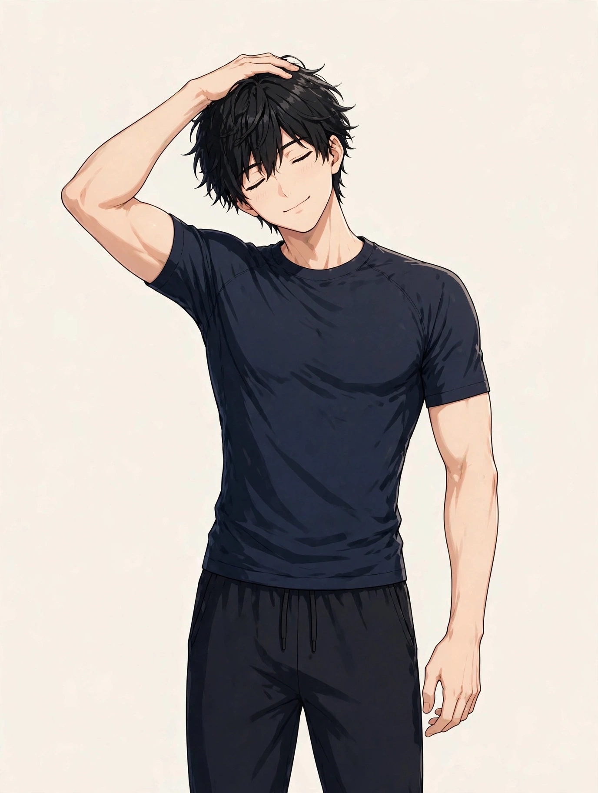

SYMPTOM GUIDE ｜ 東三国・新大阪
のどの詰まり感・異物感でお悩みの方へ東三国・新大阪の男性専用整体院 北辰堂

のどに何か詰まった感じがする、異物感が取れない、飲み込むときに違和感がある——。のどの詰まり感は、検査で異常が見つからないことも多い一方で、日常生活に強く響く訴えです。
前頸部の緊張やストレスとの関係が指摘される一方、のどの病気のサインの場合もあります。このページでは、詰まり感の要因の整理、東洋医学の「梅核気」の考え方、ツボ、セルフケア、受診の目安をまとめました。一般的な健康情報としてお読みください。
① のどの詰まり感・異物感とは
のどの詰まり感（咽喉頭異常感）は、のどに塊があるように感じるのに、飲み込み自体はできる状態を指すことが多い感覚です。東洋医学では古くから「梅核気（ばいかくき）」と呼ばれ、梅の種がのどに詰まったような感覚として表現されてきました。緊張やストレスが強い時期に出やすいことが知られています。
体の側の要因としては、前頸部（のどまわり）の筋肉の緊張があります。のどまわりには、飲み込みや発声に関わる小さな筋肉が集まり、緊張が続くと詰まり感として感じられます。胃酸の逆流（逆流性食道炎）によるのどの刺激も、代表的な要因の一つです。
一方で、のどの詰まり感は、のどや食道の病気、甲状腺の状態などのサインの場合もあります。実際に飲み込みにくい、声が変わった、体重が減ったなどの様子を伴う場合は、早めの確認が必要です。感覚だけの問題と決めつけないことが大切です。
のどまわりには飲み込みに関わる小さな筋肉が集まります。あごの下や胸鎖乳突筋の緊張が、詰まり感と結びつくことがあります。位置は目安です。
② 要因の整理
のどの詰まり感の背景は、のどまわりの緊張と、生活・体の状態の問題が重なっています。
- 前頸部の筋肉の緊張：緊張が続くと、のどまわりの小さな筋肉がこわばり、詰まり感として感じられます。声を使う仕事の方にも多い要因です。
- ストレス・緊張との連動：梅核気の考え方のとおり、気持ちの緊張が強い時期に詰まり感が出やすいことが知られています。不安と感覚は互いに強め合います。
- 胃酸の逆流：逆流性食道炎によるのどへの刺激は、詰まり感や違和感の代表的な要因です。食後や横になったときに強まる場合は関係を疑います。
- 鼻や副鼻腔からの流れ（後鼻漏）：鼻水がのどへ流れる状態が続くと、違和感や咳払いの習慣につながります。
- 姿勢と呼吸の浅さ：猫背や前かがみの姿勢は、のどまわりの圧迫と呼吸の浅さを招き、詰まり感を強めることがあります。
- 病気のサインの場合：のど・食道の病気や甲状腺の状態などが背景にある場合があります。実際の飲み込みにくさを伴う場合は確認が優先です。
③ セルフチェックリスト
詰まり感の出方と、生活の土台を振り返るためのチェックです。
- のどに塊があるような感じが続く
- 飲み込むときは、実際には飲み込める
- 緊張する場面で詰まり感が強まる
- 咳払いを頻繁にしてしまう
- 食後に胸やけや胃の不調を感じる
- 声を使う仕事をしている
- 首や肩の緊張が慢性的にある
- 詰まり感が気になって不安が強まる
チェックは診断のためのものではありません。実際に飲み込みにくい、声の変化、体重減少などがある場合は、⑧の受診の目安を先に確認してください。
④ 東洋医学から見た考え方とツボ
東洋医学では、のどの詰まり感は「梅核気」と呼ばれ、気の巡りの滞りとのどまわりの関係で捉えられてきました。のどの前側を任脈が、後ろ側の首まわりを経絡が巡ります。
天突・廉泉・風池は、のどまわりと首の緊張に関係する代表的なツボです。北辰堂では鍼灸施術は行いませんが、ツボの考え方は、体の緊張の状態を確認する施術の組み立てと、セルフケアの案内に活かしています。
廉泉はあごの下の中央、天突は胸骨の上のくぼみ、風池は後頭骨の下のくぼみにあります。のどまわりはデリケートなため、強く押さず、触れる程度から行ってください。位置は目安です。
ツボ：天突（てんとつ）
位置：胸骨の上端のくぼみ、のどの付け根にあります。のどのつかえ感と結びつけて考えられる代表的なツボです。
押し方：指先でくぼみに軽く触れ、呼吸に合わせてゆっくり圧を加えます。強く押すと咳が出やすい場所のため、ごく軽く行います。
ツボ：廉泉（れんせん）
位置：あごの下の中央、舌骨の上にあります。飲み込みやのどの働きと結びつけて考えられるツボです。
押し方：指の腹で下から支えるように、ゆっくり圧を加えます。力を入れず、心地よい範囲で行います。
ツボ：風池（ふうち）
位置：後頭骨の下、髪の生え際のくぼみにあります。首まわりの緊張と結びつけて考えられる代表的なツボです。
押し方：両手の親指で、頭を支えながらゆっくり圧を加えます。首の緊張が強い日のケアに使います。
⑤ 整体・リラクゼーションでの施術の考え方
北辰堂の施術では、まず、詰まり感の経過と、医療機関での確認を優先すべき様子（実際の飲み込みにくさ、声の変化、体重減少など）がないかを確認します。そのうえで、首・肩・前頸部まわりの緊張と、呼吸の深さ、姿勢の状態を確認し、緊張を緩める方向で施術を組み立てます。
のどの詰まり感のある方は、首や肩の緊張が強く、呼吸が浅い状態にあることが多くあります。施術で緊張をほどくことは、詰まり感の補助的なケアになります。あわせて、呼吸の整え方や、咳払いの習慣の見直しなど、日常側の案内をします。
のどの病気の診断と治療は医療機関の領域です。飲み込みにくさや声の変化を伴う場合は、施術より先に受診を案内します。当院の役割は、体の緊張に対するケアの補助です。
⑥ セルフケア
セルフケアの狙いは、のどまわりの緊張を緩め、刺激を減らすことです。のどまわりはデリケートなため、強い刺激は避けてください。

①椅子に座って背筋を伸ばす ②頭に手を添え、痛みのない範囲で横に倒す ③呼吸しながら20秒ほど保ち、反対側も行います。
セルフケア1：首の側屈ストレッチ
椅子に座り、頭に手を添えて横に倒し、首の横をゆっくり伸ばします。首まわりの緊張を緩め、のどまわりのこわばりの補助にします。痛みのない範囲で行います。
セルフケア2：腹式呼吸
椅子に座って下腹部に手を置き、ゆっくり吸って長く吐く呼吸を5回繰り返します。緊張の切り替えを助け、詰まり感が強まる場面の対処にもなります。
セルフケア3：咳払いを減らす工夫
咳払いはのどへの刺激になります。水を飲む、硬い飴をなめるなどで置き換え、のどを休めます。
セルフケア4：食後の姿勢と食事の見直し
胃酸の逆流が関係する場合は、食後すぐ横にならない、就寝前の食事を避けることが助けになります。
⑦ 場面別の注意
- 声を使う場面：長時間の会話や会議の後は、のどまわりが緊張しやすくなります。水分を取り、声を休める時間を作ります。
- 緊張する場面：詰まり感が強まりやすい場面です。呼吸を整え、首・肩の力を抜くことを意識します。
- 食後：胸やけを伴う場合は、食後すぐ横にならず、姿勢を保ちます。逆流の関与が疑われる場合は医療機関に相談してください。
- 就寝前：湯船で首・肩を温め、呼吸で切り替えを作ります。詰まり感への不安が強い夜は、記録をつけて受診時に伝えます。
⑧ 受診の目安
- 実際に食べ物や飲み物が飲み込みにくい
- 声がかすれる・声の変化が2週間以上続く
- 体重が減ってきた
- 首にしこりや腫れを触れる
- 血の混じった痰が出る
- 詰まり感が数週間以上続き、強くなっている
- 胸やけや胃の痛みを繰り返す
のどの詰まり感の背景には、逆流性食道炎、のどや食道の病気、甲状腺の状態などが隠れる場合があります。飲み込みにくさや声の変化を伴う場合は特に、医療機関（耳鼻咽喉科）で評価を受けてください。異常がないと言われたうえで緊張が中心と考えられる場合に、当院のケアを補助としてご利用ください。
⑨ よくある質問
Q. 検査で異常がないのに詰まり感があります。なぜですか？
のどまわりの筋肉の緊張や、感覚の過敏さが関係する場合があります。緊張が強い時期に出やすいことも知られています。異常がないことを確認済みであれば、体の緊張を緩めるケアが補助になります。
Q. マッサージを受ければ詰まり感は取れますか？
施術で首・肩の緊張をほどくことは、詰まり感の補助的なケアになります。ただし、詰まり感の背景は多様で、施術だけで完結するものではありません。胃酸の逆流が関係する場合は、生活側の見直しも必要です。
Q. 梅核気とは何ですか？
東洋医学で古くから使われる呼び方で、梅の種がのどに詰まったような感覚を表します。気の巡りの滞りと結びつけて考えられてきました。現代では、咽喉頭異常感と呼ばれる状態と重なる部分があります。
Q. 受診するなら何科ですか？
のどの症状は耳鼻咽喉科が窓口です。胸やけや胃の不調が中心の場合は、内科・消化器内科も選択肢です。飲み込みにくさや声の変化がある場合は、早めに受診してください。
北辰堂のご案内
北辰堂は、大阪市淀川区東三国二丁目にある整体院です。男性スタッフ1人で運営しているため、男性専用としています。施術歴30年の平賀伸人（鍼灸師・国家資格）が、整体とリラクゼーションを行います。当院では鍼灸施術は行いません。営業は平日・土曜17:00〜22:00、日曜10:00〜22:00の完全予約制です。料金は60分 初回2,000円／2回目以降6,000円、90分 初回3,000円／2回目以降9,000円で、お支払いは現金のみです。プライバシーへの配慮のため、詳しい住所はご予約確定後にLINEでご案内します。
メニュー・料金は料金・メニューページ、施術者については当院についてをご覧ください。
関連するお悩み
ご予約・ご相談はLINEから
東三国・新大阪・淀川区周辺で、のどの詰まり感にお悩みの方は、医療機関での確認を済ませたうえで、体の緊張のケアとしてLINE公式アカウント（北辰堂）へご相談ください。症状の経過をお聞きしたうえで、施術の進め方をご案内します。
LINEで予約する